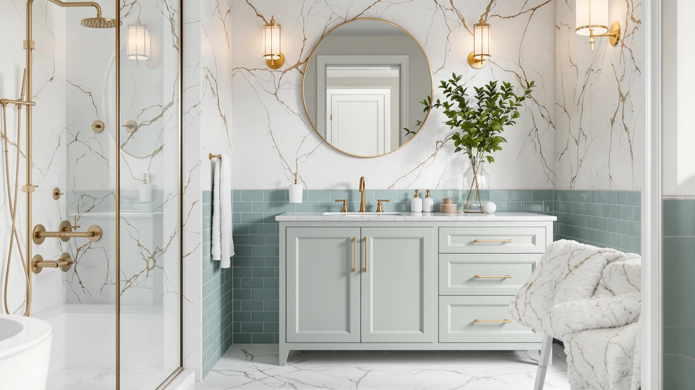

AMERLIFE 48" Farmhouse Freestanding Review (2026): Worth It?
Prices and picks verified as of October 2026. Independent, reader-supported reviews.


Quick Answer
In this AMERLIFE 48" Farmhouse Freestanding review, the vanity costs $449.99 and pairs an MDF and engineered wood cabinet with a freestanding farmhouse profile. It matches the NOVAMAISON 60" alternative on price but gives up 12 inches of width, so the right pick depends on how much wall space your bathroom has to spare.
Our pick: AMERLIFE 48" Farmhouse Freestanding Bathroom at $449.99 Check Price on Amazon
Bottom line: our top pick is the AMERLIFE 48" Farmhouse Freestanding Bathroom Vanity with Sink at $449.99.
Things to Know Before You Buy
- Price range: the four vanities in this AMERLIFE 48" Farmhouse Freestanding review span $444.99 to $449.99, a gap of under $5.
- Width matters more than brand here. The AMERLIFE and Quicklock options stay at 48 inches, while the NOVAMAISON jumps to 60 inches for the same price.
- None of the four listings in this review carry a public Amazon rating or review count yet, so you are weighing specs and materials rather than years of owner feedback.
- The AMERLIFE's freestanding farmhouse design suits a cottage or rustic bathroom. If your bathroom leans modern, the NOVAMAISON's more conventional cabinet front may blend in better.
- Every price below reflects the listing at the time of writing and can shift, so check the current Amazon price before you buy.
This AMERLIFE 48" Farmhouse Freestanding review looks at the $449.99 vanity and lines it up against three close-priced alternatives, so you can see exactly what that price buys in a farmhouse-style single-sink vanity right now. The freestanding design, with its exposed furniture-style legs, looks nothing like the boxier wall-mounted cabinets that dominate this price range. A lot of farmhouse-branded vanities on Amazon lean on photos and marketing copy that look similar from one listing to the next, and the differences only show up once you compare materials, dimensions, and price side by side.
The short version: the AMERLIFE 48" Farmhouse Freestanding vanity wins on style and footprint, since its 48 inch width and raised-leg silhouette fit a cottage or farmhouse bathroom without crowding a standard single-sink layout. It loses on track record, because none of the four listings covered here, including the AMERLIFE itself, have collected a public rating yet. If 12 extra inches of counter space matters more to you than the farmhouse look, the NOVAMAISON below costs the same $449.99. We break down all four options, including where each one falls short, in the sections that follow.
Why You Should Trust Us
Ilane Tall covers bathroom fixtures and furniture for Best Bathroom Vanities and put together this AMERLIFE 48" Farmhouse Freestanding review by comparing manufacturer specs, current Amazon pricing, and listed materials rather than repeating marketing copy. We do not run a fake testing lab or claim to have installed every vanity we cover. Instead, we cross-check dimensions, materials, and pricing against what owners report after living with similar pieces, and we say so plainly when a listing does not yet have enough review data to back a confident recommendation. That distinction matters in the freestanding vanity category, where a farmhouse-style photo rarely shows how exposed legs and MDF panels hold up after a year of daily splashes.
Our Research Experience
This review does not involve physical testing. We compared the AMERLIFE 48" Farmhouse Freestanding vanity against its closest-priced competitors using each manufacturer's listed materials, dimensions, and construction details, then checked those claims against whatever public review data exists. For all four listings in this review, including the AMERLIFE, Amazon has not yet collected enough ratings to show a review count, so we relied on the listed features, pricing, and construction specs alone. We flag that gap below rather than filling it with invented star ratings, and when a manufacturer's description leaves out a detail a buyer would want, such as drawer hardware or leg material, we note the omission instead of guessing.
Overview & Specs
Here is how the AMERLIFE 48" Farmhouse Freestanding vanity breaks down on paper, along with the pros, cons, and pricing details you need before you decide. The specs table below covers material and size at a glance, and the write-up beneath it goes into the reasoning behind each pro and con.

AMERLIFE 48" Farmhouse Freestanding Bathroom
What we like
- Freestanding farmhouse design with exposed furniture-style legs, a look most boxed-in wall-mounted vanities don't offer
- 48 inch width fits standard single-sink cutouts, so plumbing rarely needs to move
- Priced at $449.99, in line with the other three alternatives in this review
Flaws but not dealbreakers
- MDF and engineered wood construction is more moisture-sensitive than solid hardwood over the long run, especially around exposed legs
- No public Amazon rating or review count yet, so early buyers are relying on the listing alone
- 60 inches of counter space, like the NOVAMAISON offers, isn't available at this width
| Material | MDF / engineered wood |
| Size | 48" |
The AMERLIFE 48" Farmhouse Freestanding vanity gets the top spot in this review because it is the only option here built around a freestanding, furniture-style silhouette rather than a flush wall-mounted cabinet. The cabinet uses an MDF and engineered wood build finished to read as farmhouse or cottage styling, with exposed legs that lift the cabinet off the floor instead of resting flush against the baseboard. At $449.99 it matches the second AMERLIFE listing and the NOVAMAISON on price, and undercuts nothing in this review except the Quicklock RTA cabinet by a few dollars. For a bathroom remodel aiming at a rustic or farmhouse look, that exposed-leg design is the main reason to pick this vanity over a boxier alternative at the same price.
Where the AMERLIFE falls short is track record. Amazon shows no rating or review count on this listing yet, so you are evaluating it on specs and styling rather than years of owner feedback. Engineered wood and MDF cores also mean wiping up standing water around the sink basin promptly, and that matters more on a freestanding design where the legs and lower cabinet panels sit exposed rather than protected behind a toe-kick. If your bathroom sees heavy daily splashing from more than one person, or you'd rather buy from a listing with an established review history, weigh that against how much the farmhouse look matters to your remodel before you order.
What We Liked
Across this AMERLIFE 48" Farmhouse Freestanding review, the exposed-leg silhouette is the biggest draw. Few vanities at $449.99 commit to a full farmhouse look rather than a generic cabinet front with farmhouse-style hardware bolted on. The 48 inch width also drops into most standard single-sink cutouts without extra carpentry, and the price lines up evenly with three other options covered here, which makes it easy to compare on styling alone rather than hunting for a hidden cost difference.
What Could Be Better
The biggest gap is review history. Because none of the four listings in this review, including both AMERLIFE SKUs, have collected public ratings yet, part of the buying decision rests on trusting the manufacturer's stated materials rather than reading through owner complaints. MDF and engineered wood construction, even when styled as solid farmhouse furniture, also asks for more care around standing water than real hardwood, and that matters more on a freestanding piece where the legs sit exposed to splashes rather than tucked behind a toe-kick panel.
Shoppers who want photographic proof of how the finish ages over a few years will not find that here yet, simply because the product has not been on the market long enough to generate it. The same gap applies to the second AMERLIFE listing and to both alternatives, so this is a category-wide limitation rather than a flaw specific to one SKU. If an established track record matters more to your decision than styling, factor that trade-off in before you commit to any of the four vanities compared here.
Who Is It For?
The AMERLIFE 48" Farmhouse Freestanding vanity fits a single-user bathroom aiming for a cottage or farmhouse look, where exposed furniture-style legs matter more than matching a modern, flush cabinet front. It is a reasonable match for a budget remodel under $500 in a bathroom with a standard 48 inch single-sink footprint. It is a weaker fit if you want a proven Amazon rating before you buy, if your bathroom gets heavy daily splashing from more than one person, or if your decor leans modern rather than rustic, where the finish on a boxier cabinet like the NOVAMAISON below might blend in better. Renters planning a short-term stay may also prefer a lower-commitment option, since a freestanding farmhouse piece reads as a style statement that will not suit every landlord's taste when it comes time to move out.
Alternatives to Consider
If the AMERLIFE 48" Farmhouse Freestanding vanity does not fit your bathroom or your style, these three alternatives cover different priorities: extra counter width for the same price, a second AMERLIFE SKU at the identical price point, and the lowest entry price of the group in a ready-to-assemble format.

Editor’s Pick
NOVAMAISON 60" Bathroom Vanity with
Twelve more inches of counter space than the AMERLIFE, at the same $449.99 price, for a bathroom with the wall space to spare and a preference for a more conventional cabinet front.
$449.99
Check Price on Amazon
Best Value
AMERLIFE 48" Farmhouse Freestanding Bathroom
The same AMERLIFE 48" Farmhouse Freestanding design under a separate listing, priced identically at $449.99, worth checking if the primary pick above shows limited stock.
$449.99
Check Price on Amazon
Premium Choice
Quicklock RTA (Ready-to-Assemble) | Bathroom
The lowest price of the four at $444.99, in a ready-to-assemble format, for buyers willing to trade a few dollars in savings for assembly time.
$444.99
Check Price on AmazonIs the AMERLIFE 48" Farmhouse Freestanding vanity worth the $449.99 price?
For a single-sink bathroom that wants a farmhouse look without a custom-cabinet budget, yes.
How does the AMERLIFE 48" Farmhouse Freestanding compare to the NOVAMAISON 60" vanity?
The NOVAMAISON is 12 inches wider and costs the same $449.99, so it mainly comes down to how much wall space your bathroom has.
Frequently Asked Questions
Is the AMERLIFE 48" Farmhouse Freestanding vanity worth the $449.99 price?
For a single-sink bathroom that wants a farmhouse look without a custom-cabinet budget, yes. The MDF and engineered wood build keeps the price down compared to solid hardwood freestanding vanities, and the 48 inch width fits most standard single-sink layouts without replumbing.
How does the AMERLIFE 48" Farmhouse Freestanding compare to the NOVAMAISON 60" vanity?
The NOVAMAISON is 12 inches wider and costs the same $449.99, so it mainly comes down to how much wall space your bathroom has. The AMERLIFE's freestanding farmhouse styling also reads differently than the NOVAMAISON's more conventional cabinet front, so personal taste plays a role too.
Is MDF durable enough for a freestanding bathroom vanity?
It holds up fine under normal bathroom humidity as long as you wipe up standing water around the sink promptly. MDF and engineered wood cores swell faster than solid hardwood if moisture sits on the surface for long stretches, which matters more on a freestanding piece with exposed legs than on a flush wall-mounted cabinet.
Final Verdict
This AMERLIFE 48" Farmhouse Freestanding review comes down to how much the farmhouse look matters to your bathroom. The AMERLIFE 48" Farmhouse Freestanding Bathroom vanity is the pick for a cottage or rustic single-sink remodel, since its exposed-leg design is the only one in this lineup built around that style. If you would rather have 12 extra inches of counter space at the same price, or you want a ready-to-assemble option that saves a few dollars, the alternatives above cover those cases without straying far from the same $444.99 to $449.99 range. Whichever vanity you choose, confirm the current price and stock before ordering, since Amazon listings in this category shift more often than the pages themselves get updated.